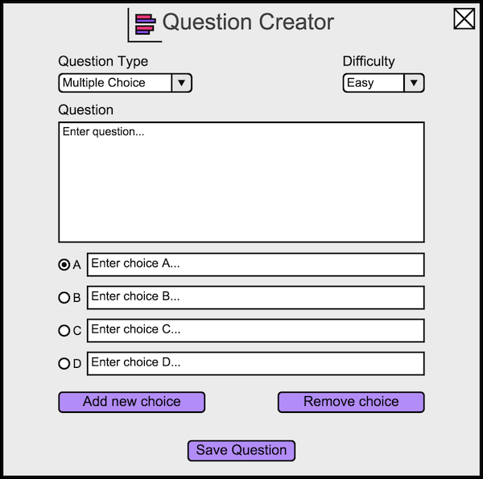

The scenarios in this section show an instructor adding and editing a variety of test questions. These questions are then saved and added to the question bank.
When the instructor selects 'Add new question' in the question bank menu, the system displays the dialog shown in
Figure 1.

Figure 1: Default Question Creator view.
The instructor writes the desired question in the field labeled 'Question'. The instructor selects the 'X' in the top right corner to exit the dialog without saving any changes to the question. The instructor selects the 'Save Question' button at the bottom of the dialog to save the question to the question bank. This saves the question regardless of how many fields are filled out.
The 'Difficulty' option is used to classify how difficult the question is. The choices for this option are shown in
Figure 2.
Figure 2: Drop down list of difficulty types.
The instructor selects the down arrow next to the 'Question Type' option to display the menu depicted in
Figure 3.
Figure 3: Drop down list of question types.